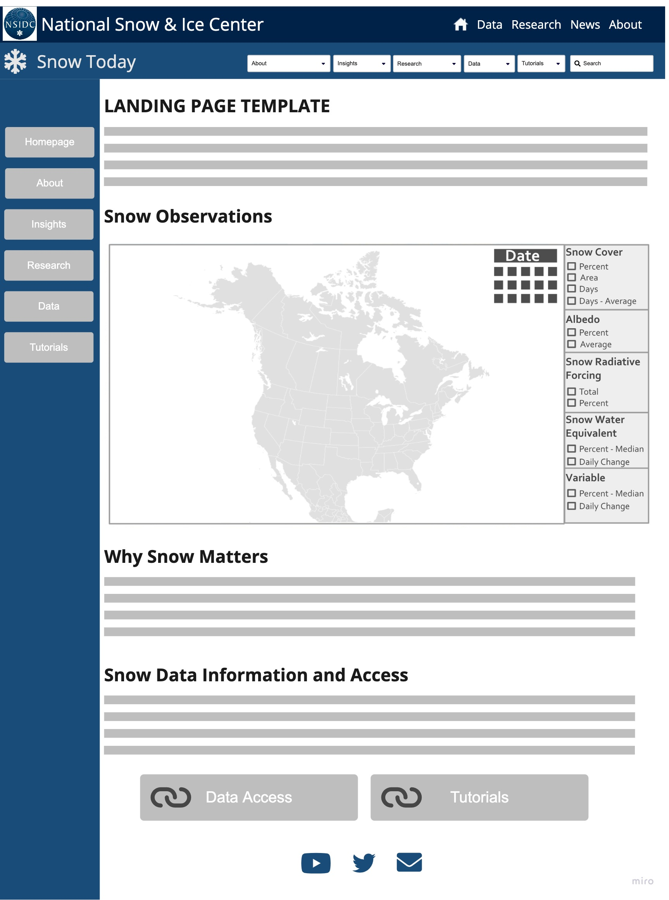
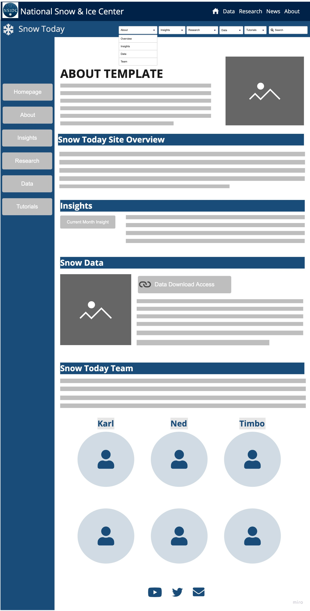
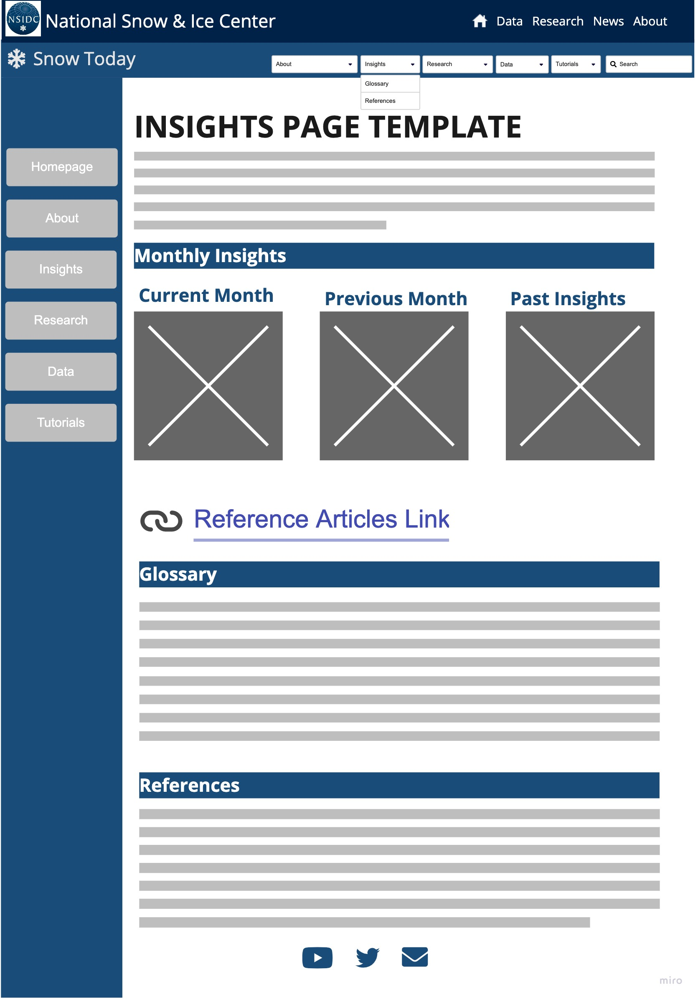
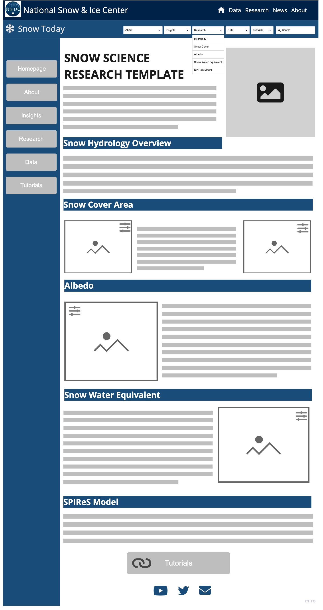
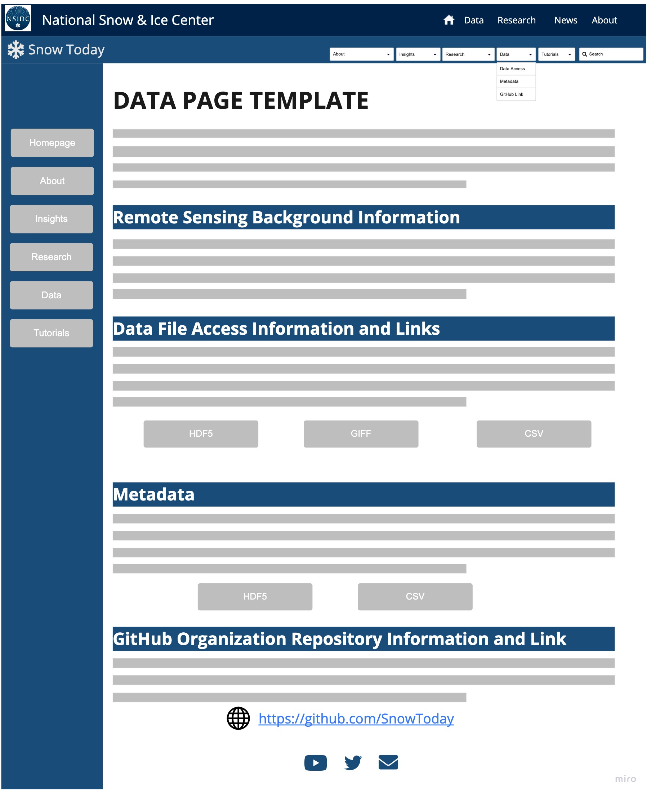
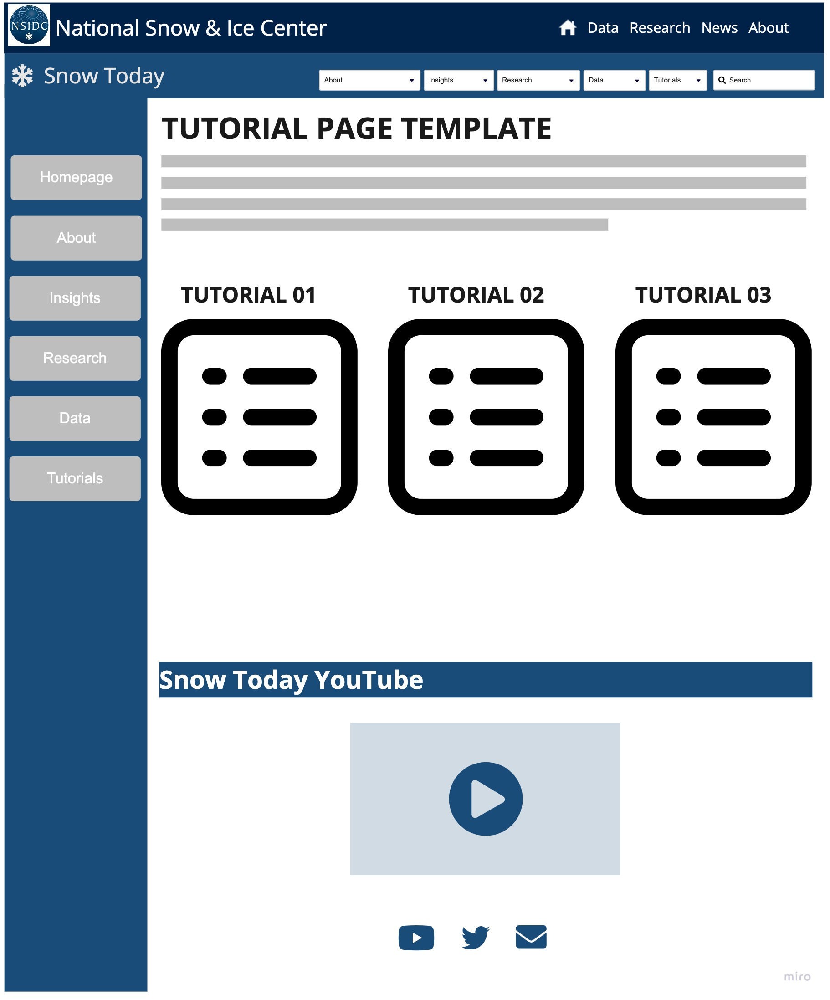

Section 10 Appendix C: Wireframe

Figure 10.1: WireFrame design for the recommeneded Snow Today website ‘Landing’ page update

Figure 10.2: WireFrame design for the recommeneded Snow Today website ‘About’ page update

Figure 10.3: WireFrame design for the recommeneded Snow Today website ‘Insights’ page update

Figure 10.4: WireFrame design for the recommeneded Snow Today website ‘Snow Science Research’ page update

Figure 10.5: WireFrame design for the recommeneded Snow Today website ‘Data’ page update

Figure 10.6: WireFrame design for the recommeneded Snow Today website ‘Tutorial’ page update
Anaconda, Inc. 2017. “Conda—Conda 4.13.0 Documentation. Revision F072c34d.” https://docs.conda.io/projects/conda/en/latest/index.html.
Bair, E. H., and T. Stillinger abd J. Dozier. 2019. “Snow Property Inversion from Remote Sensing (SPIReS): A Generalized Multispectral Unmixing Approach with Examples from MODIS and Landsat 8 OLI.” IEEE Transactions on Geoscience and Remote Sensing 59 (09): 7270–84. https://doi.org/10.1109/TGRS.2020.3040328.
Collette, A. 2013. “Python and Hdf5 (First Release).” O’Reilly. https://learning.oreilly.com/library/view/python-and-hdf5/9781491944981/.
contributors, GDAL/OGR. 2020. “GDAL/OGR Geospatial Data Abstraction Software Library.” https://gdal.org.
contributors, imageio. 2022. “Imageio Documentation. Release 2.19.3.” https://imageio.readthedocs.io/en/stable/.
Contributors, rioxarray. 2022. “Rioxarray Documentation. Release 0.11.0.” https://corteva.github.io/rioxarray/stable/index.html.
Gillies, S. 2022. “Rasterio Documentation.” https://rasterio.readthedocs.io/en/latest/.
Harris, Charles R., K. Jarrod Millman, Stéfan J. van der Walt, Ralf Gommers, Pauli Virtanen, David Cournapeau, Eric Wieser, et al. 2020. “Array Programming with NumPy.” Nature 585 (7825): 357–62. https://doi.org/10.1038/s41586-020-2649-2.
Hoyer, S., and J. Hamman. 2017. “Xarray: N-D Labeled Arrays and Datasets in Python.” In Revision, J. Open Res. Software.
Hunter, J. D. 2007. “Matplotlib: A 2d Graphics Environment.” Computing in Science & Engineering.
Inc, P. T. 2015. “Collaborative Data Science. Montreal, QC: Plotly Technologies Inc.” https://plot.ly.
Liston, G. E. 1999. “Interrelationships Among Snow Distribution, Snowmelt, and Snow Cover Depletion: Implications for Atmospheric, Hydrologic, and Ecologic Modeling.” Journal of Applied Meteorology and Climatology 38 (10): 1474–87. https://doi.org/10.1175/1520-0450(1999)038<1474:IASDSA>2.0.CO;2.
McKinney, W., and Others. 2010. “Data Structures for Statistical Computing in Python.” Proceedings of the 9th Python in Science Conference.
Newton, B. W., B. Farjad, and J. F. Orwin. 2021. “Spatial and Temporal Shifts in Historic and Future Temperature and Precipitation Patterns Related to Snow Accumulation and Melt Regimes in Alberta, Canada.” Water 13 (8): 1013. https://doi.org/10.3390/w13081013.
RStudio. 2022. “Shiny from RStudio.” https://shiny.rstudio.com/.
Stillinger, T., E. Bair, M. Colee, B. Davis, and J. Dozier. 2022. “Remotely-Sensed Products of Snow Research at UC Santa Barbara and the Cold Regions Research and Engineering Laboratory (CRREL) and University of California Santa Barbara (UCSB) Energy Site.” https://snow.ucsb.edu/index.php/remotely-sensed-products/.
Techtonik, A. 2015. “Wget Documentation. Release 3.2.” https://pypi.org/project/wget/.
Wu, Q. 2021. “Leafmap: A Python Package for Interactive Mapping and Geospatial Analysis with Minimal Coding in a Jupyter Environment.” Journal of Open Source Software. https://doi.org/10.21105/joss.034.